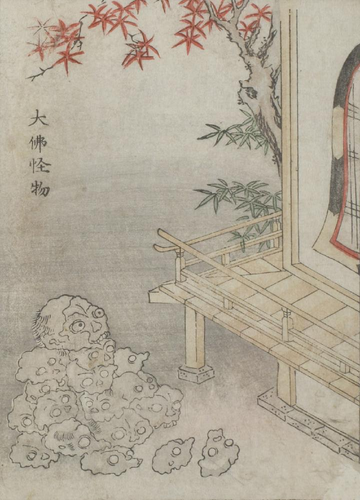

髑髏；ドクロ，骸骨；ガイコツ

寺院と思われる縁側に、いくつもの崩れかけた髑髏が山のように積み上げられている。頂上の髑髏には目玉がある。
出典：親書誌：U426_nichibunken_0051：怪物画本；カイブツエホン／日付：2006／資源識別子：U426_nichibunken_0051_0008_0000
Copyright (c)2010- International Research Center for Japanese Studies, Kyoto, Japan. All rights reserved.